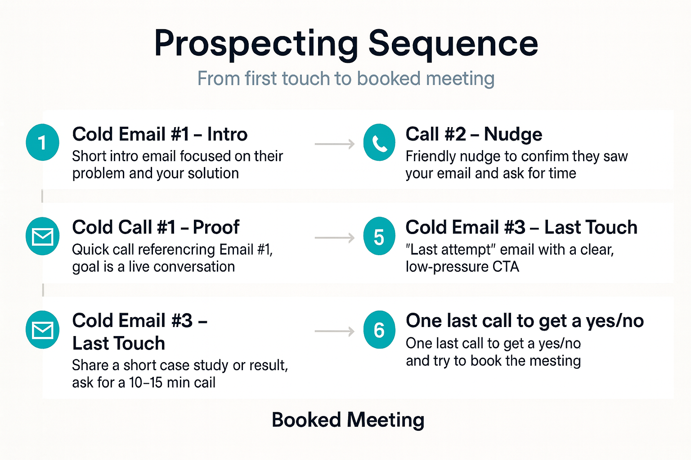

Sequences
Power up outreach with thoughtful, repeatable sequences
Great reps don’t wing it. They follow a reliable arc: introduce value, prove credibility, nudge with care, and ask with clarity. Sequences turn that rhythm into a repeatable asset that keeps every prospect moving without slipping through the cracks.
Less manual follow-up
Schedule touches once—emails, calls, reminders—and let the system queue the next action automatically.
Consistent messaging
Pair templates with personalization tokens so every send feels tailored while staying on-brand.
Energy focused on selling
Stop guessing what’s next. Sequences surface the next best step so you spend time in conversations, not in spreadsheets.
Example sequence
A six-touch flow from first contact to booked meeting
Use this as a starting point: adapt steps, timing, and tone to match your industry and deal cycle.
Clear, timely touches keep momentum without feeling pushy.
